What this is
One GDS, plus three files you own, gets you five kinds of picture. Only these three EXAMPLE-owned files drive them -- klink supplies mechanism only (binding the xsection engine, generating GLB meshes, SEM raster rendering, building Blender scenes), zero process constants:
| Your file | What it is |
|---|---|
demo_layout.py | The example layout: a row of four CMOS transistors (two NMOS in the p-substrate, two PMOS in an n-well), poly gates, a contact on every source/drain, and metal-1 straps plus power rails. Also exports the section cut line, CUT_UM. Editing this file is how you switch to your own device. |
demo.pyxs | The process recipe -- trusted Python, executed in-process; # klink-step: <name> comments mark each process step. Editing this file is how you switch to your own flow. |
demo_stack.py | A klink_visual_stack_v1 declaration: per-layer z0_um/z1_um, color, SEM greyscale level (sem_grey), material class (solid / lattice / dielectric), and the matching recipe symbol (recipe_symbol). Editing this file is how you switch to your own process. |
This tutorial walks the shipped starter: example_template/imaging/demo_layout.py, demo.pyxs, demo_stack.py, and the four demo scripts (xsection_demo.py / render3d_demo.py / sem_demo.py / blender_demo.py). Everything runs offline; outputs land in _generated/.
Prerequisites
- Install klink:
pip install klayout-klink. - Each of the four exits has its own optional dependency set -- install on demand; whatever you're missing, klink's error names the exact pip command:
pip install klayout klayout-pyxs==0.1.13 # cross-section engine
pip install trimesh shapely mapbox-earcut # 3D
pip install numpy scipy pillow # SEM / film rendering
pip install bpy # Blender (~300MB, optional)imaging.xsection_run / imaging.render3d / imaging.sem_top / imaging.blender, with parameters matching these scripts one-for-one; klink.find_tools domain=imaging shows the full usage.Get the starters
klink init myproj
cd myproj/example_template/imaging
python xsection_demo.pyAfter upgrading klink, run klink update to refresh the starters (new/fixed files get restored; old files you never touched get cleaned up).
example_template/ directory is package-owned -- klink update refreshes it back to the shipped state. So copy demo_layout.py / demo.pyxs / demo_stack.py out to your project root or your own directory before editing (same treatment as pdk.py); don't edit the files inside example_template/ directly. klink update never touches a demo's _generated/ output directory.1Cross-section + per-step process film
xsection_demo.py first draws a row of four CMOS transistors with demo_layout.py: two NMOS in the p-substrate on the left, two PMOS in an n-well on the right, poly gates crossing the active strip, a contact on every source/drain, and metal-1 straps plus power rails top and bottom. Then it sections the device along an explicit cut line, CUT_UM = [[-0.8, 1.9], [11.2, 1.9]] (straight through the middle of the active row, crossing all four gates, the spacers, and the well edge): once as a single-frame cross-section, once as a per-step process film with steps=True.
python xsection_demo.py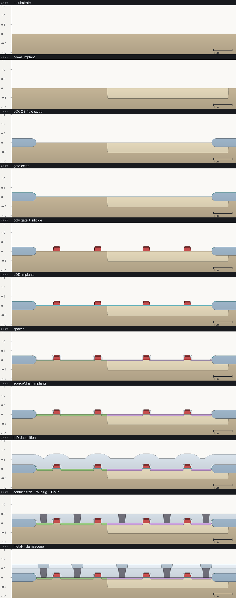
film_film.png): one cross-section frame per klink-step marker in demo.pyxs, from bare substrate through finished metal-1 interconnect -- 11 markers, 11 frames.demo.pyxs marks process steps with # klink-step: <name> comments -- each marker names the step that follows it, and the film renders one frame per marker. This recipe has 11 markers: p-substrate, n-well implant, LOCOS field oxide, gate oxide, poly gate + silicide, LDD implants, spacer, source/drain implants, ILD deposition, contact etch + W plug + CMP, metal-1 damascene. Here's an excerpt (see demo.pyxs for the full 11 steps):
# klink-step: p-substrate
pbulk = bulk()
# klink-step: n-well implant
nwell = mask(lnwell).grow(0.55, -0.05, mode='round', into=pbulk)
# klink-step: LOCOS field oxide
mfield = mask(lfield)
_fox_up = mfield.grow(0.22, 0.22, bias=0.12, mode='round')
_fox_dn = mfield.grow(0.22, 0.22, bias=0.12, mode='round',
into=[pbulk, nwell])
fox = _fox_up.or_(_fox_dn)
# ... gate oxide / poly gate + silicide / LDD implants / spacer /
# source-drain implants / ILD deposition go here (full code in demo.pyxs) ...
# klink-step: contact etch + W plug + CMP
mask(lcontact).etch(0.85, into=ild, taper=5)
tungsten = deposit(0.18, 0.18)
planarize(into=[tungsten, ild], less=0.5)
# klink-step: metal-1 damascene
imd = deposit(0.22)
mask(lmetal1).etch(0.32, into=imd, taper=5)
metal1 = deposit(0.22, 0.22)
planarize(into=[metal1], less=0.22)A material assigned to a variable is auto-output under that name, no output() call needed -- except when the variable name starts with _: _fox_up / _fox_dn above are the intermediate results of growing the two LOCOS field-oxide halves separately; the leading underscore marks them as intermediates, used only to build the final fox via .or_(), and they never appear as materials of their own in the output.
The five most instructive frames (see the full 11-frame film above):
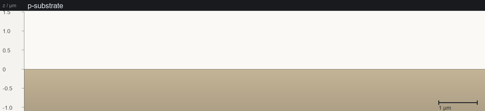
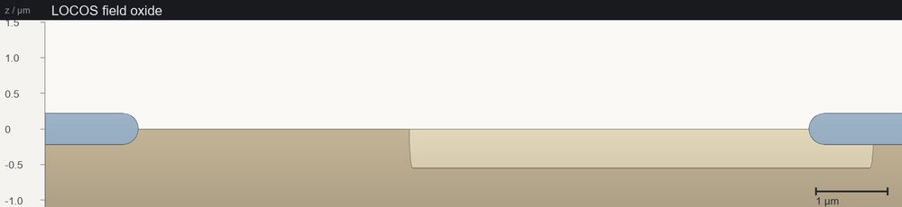
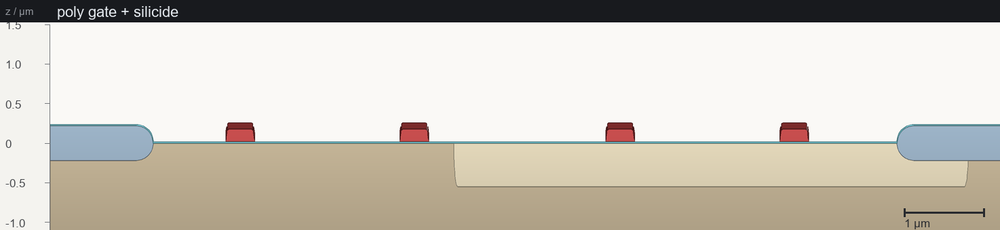
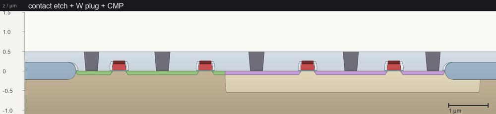
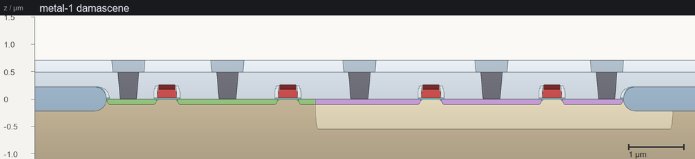
MCP tool: imaging.xsection_run -- cut_um must be given explicitly (µm), steps=true plus the recipe's # klink-step: markers produce the film. z_window_um fixes one z window for every frame (here (-1.1, 1.5) -- the engine's substrate runs several microns deep, so an unframed section is mostly bulk), and axis=true draws a labeled z / µm ruler down the left side of every frame plus a horizontal scale bar in the corner (that's the tick marks on the left and the "1 µm" segment in each image above). Outputs are deterministic (no GDS timestamps), overwrite=false by default, and every run writes a klink_imaging_result_v1 machine-readable sidecar.
23D + self-contained web viewer
render3d_demo.py turns the same four-transistor CMOS row into two GLB models plus two self-contained web viewers:
python render3d_demo.pyfast_glb = OUT / "render3d_fast.glb"
build_glb_fast(str(GDS), STACK, str(fast_glb)) # extrudes the STACK declaration
build_viewer_html(str(fast_glb), str(OUT / "render3d_fast.html"))
proc_glb = OUT / "render3d_process.glb"
build_glb_process(str(GDS), STACK, str(RECIPE), str(proc_glb),
slices=24, fraction=0.6) # sweeps the real recipe; fraction<1 = cutaway
build_viewer_html(str(proc_glb), str(OUT / "render3d_process.html"))Fast mode directly extrudes the z0_um/z1_um from demo_stack.py -- quick, but the shapes are idealized layer blocks; process mode sweeps the real .pyxs recipe slice by slice, so real topology like LOCOS, conformal layers, or CMP curvature shows up -- this run also passes fraction=0.6, producing a cutaway where the exposed face is a true cross-section. The generated .html is fully self-contained and offline (the viewer JS and the model data are both encoded into the same file): double-click to open in a browser, drag to rotate, and a right-hand panel lets you tune each layer's color/metallic/roughness and export a PNG.
render3d_demo.py writes, embedded as-is: drag to rotate, scroll to zoom, and use the right-hand panel for background, exposure, tone mapping, shadows, per-material color/metallic/roughness, and PNG export. It is a single offline file — viewer JS and model data are both encoded into that one HTML — so opening it directly or mailing it to a colleague works the same, with no network and nothing to install.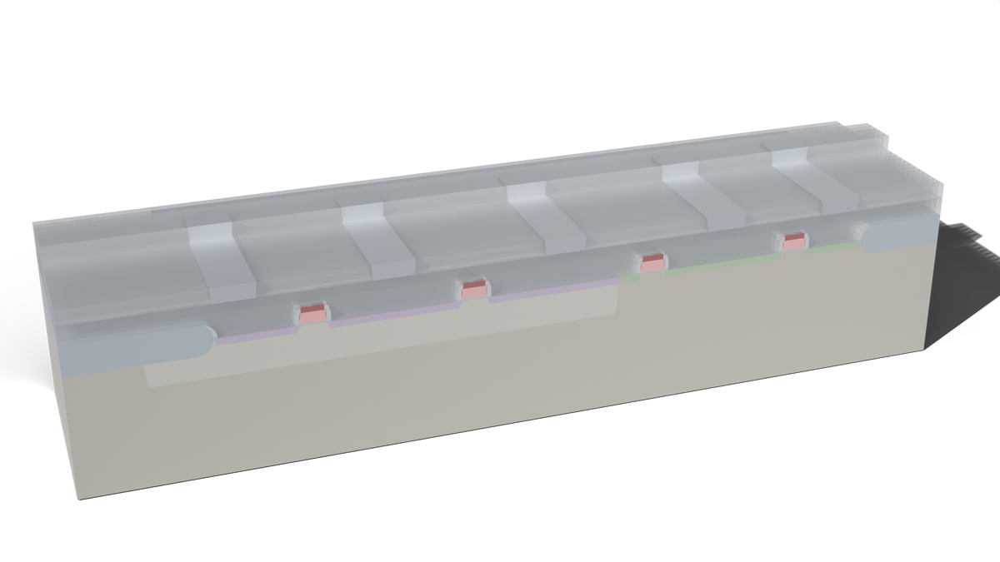
render3d_process.glb model, restaged by blender_demo.py's mode="die" onto a transparent film with a shadow catcher: you can see the shallow channel along the top, the four dark-red poly-gate blocks, and the dark-grey contact/metal columns between them, included here to show what the model looks like.MCP tool: imaging.render3d -- mode="fast" extrudes a klink_visual_stack_v1 declaration; mode="process" sweeps the xsection engine, mapping recipe materials (pbulk, nwell, tungsten, ...) to colors through recipe_symbol; anything unmapped goes grey and is reported as unstyled.
3SEM-style top view
sem_demo.py renders the layout the way a secondary-electron micrograph would roughly show it: per-layer sem_grey/edge_glow from the VisualStack drive grey emission levels and bright topography rims, plus litho corner rounding, beam blur, seeded film grain, scanlines, and vignette -- the same seed always gives the identical image.
python sem_demo.py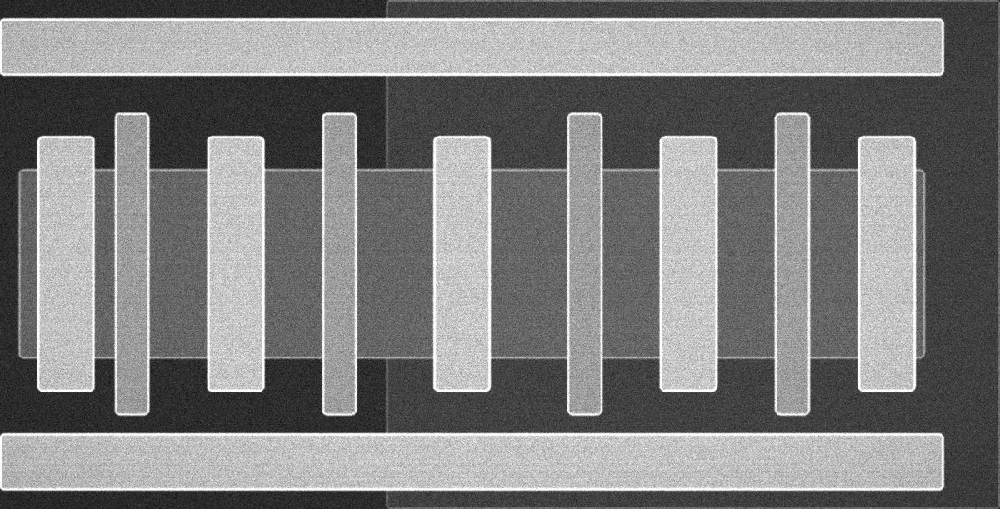
sem_top.png): the two power rails top and bottom; the nine vertical bars in between alternate between the four poly gates and five metal-1 contact columns, crossing the active area. The left half of the background (p-substrate) is darker than the right half (n-well) -- per-layer sem_grey emission levels drive that contrast.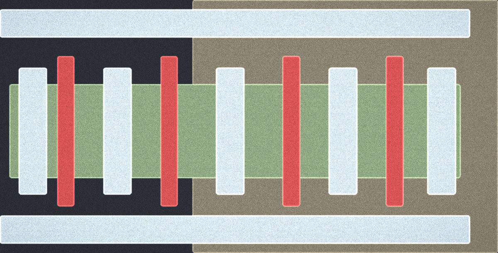
sem_top_color.png): the same underlying data, a different read -- red is poly gate, pale blue-grey is metal-1, the green band is the active area, and the background colors separate p-substrate (dark navy) from n-well (olive-brown).The script also renders a cumulative "masks printed so far" sequence, following demo_stack.py's layer order -- paired with the recipe's # klink-step: order, that's the top-view equivalent of the per-step process film:
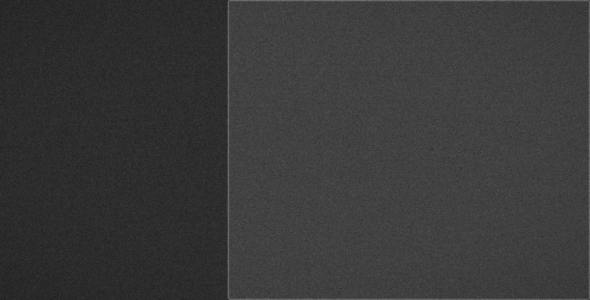
1/0 (n-well) has printed (sem_after_1_0.png) -- n-well is an implant with no topography of its own, so at this step the frame is just a flat grey field split into two shades by the well boundary; the active/poly/contact/metal masks that print later aren't visible at all yet. The layers= parameter restricts rendering to the masks printed so far.MCP tool: imaging.sem_top -- greyscale and false-color PNGs come out of one call, layers=[...] restricts to the mask subset printed at a given step, rendering is deterministic (same seed, same result).
4Blender paper-grade renders
blender_demo.py uses headless bpy to produce two figures from the same declarations:
python blender_demo.pymode="figure": a 2D-material device at 1:1 layout coordinates -- layer10/0is a MoS2 flake; declaringkind="lattice", motif="mos2"grows a real atomic lattice (motif="graphene"is also supported); layer20/0is Au electrodes, drawn as exact layout prisms; plus explicit Si/SiO2 substrate slabs.mode="die": restagesrender3d_process.glb(the section 2 output) on transparent film with a shadow catcher -- this is the same cutaway chip image already shown above.
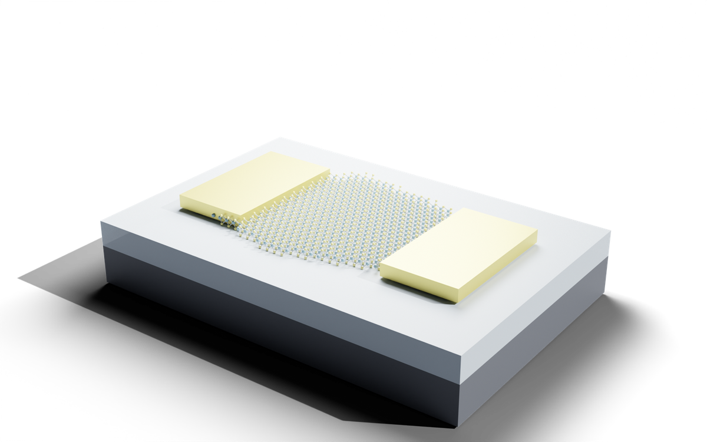
blender_figure.png: the MoS2 flake grows a real atomic lattice (kind="lattice", motif="mos2"), the Au electrodes are exact layout prisms, and the substrate is an explicit SiO2/Si slab.Both modes also write a .blend file (blender_figure.blend / blender_die.blend) -- open it in desktop Blender to adjust camera/lights/materials by hand and re-render; it's not a one-shot black-box output.
MCP tool: imaging.blender -- runs headless bpy in an isolated subprocess; mode="die" needs a process-mode GLB already produced by imaging.render3d (or render3d_demo.py); mode="figure" takes gds + stack directly and needs bpy (plus trimesh/klayout-pyxs==0.1.13 if you also want the die figure).
Does it get the physics right?
This isn't marketing language -- it's a checkable result: take the same layout, write the same handful of contact-step lines in the .pyxs recipe three different ways, and whether the tungsten plug actually shows up in the generated 3D model comes out completely different each time -- causality lives in the recipe order, not in the layout coordinates.
| Variant | Recipe change | W plug in the model |
|---|---|---|
| A -- the shipped flow | ild = deposit(...) → mask(lcontact).etch(0.85, into=ild, taper=5) → tungsten = deposit(...) → planarize(...) |
z = 0.00 - 0.49 µm: the plug runs from the silicon surface up to the CMP plane. |
| B -- contact etch deleted | the mask(lcontact).etch(...) line removed |
The W plug material is absent from the model entirely -- with no hole to fill, the CMP takes all the tungsten back off. |
| C -- contact etch moved before the ILD | the same etch line, run before ild = deposit(...) |
Absent as well -- it opened holes in a film that hadn't been deposited yet, the equivalent of etching thin air. |
The layout is byte-identical in all three variants -- only the recipe order differs. B and C are both open circuits: every transistor is broken at the contact level, and the device never conducts. And nothing in a layout view would show it -- an ordinary layout checker only looks at the polygons in the GDS, and the GDS is the same file in all three variants. Only the cross-section and the process-mode 3D catch this, because they actually run the recipe in order instead of stacking idealized layer blocks.
Worth noting for honesty: metal-1 sits at z = 0.45 - 0.93 µm in all three cases -- the upper levels look perfectly fine, because the metal-1 damascene step doesn't care whether the tungsten plug below it exists. The failure is only visible at the contact level; you'd never catch it from the layout or from a metal-only view.
Authoring gotcha: deposit is not patterned
mask(l).grow(...) -- there is no mask(l).deposit(); deposit(...) is always a blanket (whole-surface) operation. etch(...) is blanket too; patterned etch is mask(l).etch(...). demo.pyxs is a live example: nwell uses mask(lnwell).grow(...) (patterned growth), gox/ild/tungsten/imd/metal1 use blanket deposit(...), and the contact hole and metal-1 trench use mask(lcontact).etch(...) and mask(lmetal1).etch(...) respectively (patterned etch).Determinism · output contract
- Never silently overwrites: if the target file already exists, the call is rejected by default -- you must pass
overwrite=Trueexplicitly to replace it. - Every run writes a machine-readable sidecar:
*.klink_imaging.json, formatklink_imaging_result_v1-- it carries the inputcut_um/parameters, asha256for every output file, andsha256es for the GDS/recipe inputs, so a script or CI can read this JSON directly instead of parsing human-readable logs. - GDS output is byte-reproducible: no timestamps are written, so the same inputs produce byte-identical GDS across runs.
Engine & viewer credits
Cross-sections are driven by the klayout-pyxs engine -- klink imports it as a dependency, pinned to ==0.1.13, and never vendors it into the repo. The 3D viewer embeds Google's <model-viewer> (a bundled copy is vendored so the exported .html can open fully offline). What klink itself writes is the glue: GLB mesh generation, SEM raster rendering, and Blender scene construction -- not the cross-section engine or the viewer itself.
Next steps
Copy demo_layout.py, demo.pyxs, and demo_stack.py into your own project, swap in your real layout, layer numbers/z-ranges/colors, and your real process steps (deposition thickness, etch depth, mask layers), and rerun the four scripts unchanged. To check the physics really holds for your process, do what the "Does it get the physics right?" section above did: move one line in your recipe to where it actually belongs (say, an etch to before the deposition it's supposed to follow) and compare whether a material vanishes entirely from process mode (imaging.render3d mode="process") or the cross-section (imaging.xsection_run) -- a material disappearing means the recipe is actually driving geometry, not decoration. All four exits share one VisualStack declaration, so changing a layer color once updates the cross-section, 3D, SEM, and Blender pictures together.